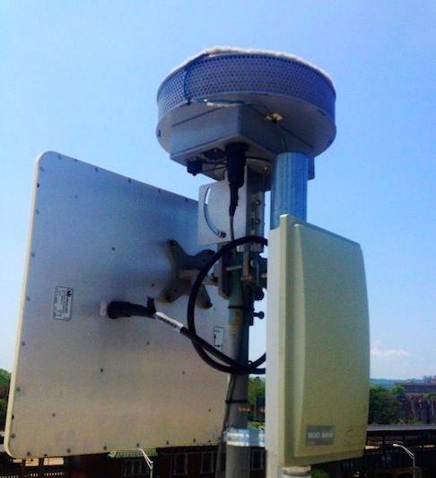

Credit: Image from wnyc.org

Gun Shot Detectors
Shotspotter is an audio surveillance system. It consists of sensors - microphones - distributed over a neighborhood in order to determine the location of a gunshot. This sensor data can be used to distinguish gunshots from similar sounds such as fireworks and cars backfiring.
Where
Distributed through the Englewood, Harrison, Chicago Lawn and Grand Crossing neighborhoods with approximately 45-60 sensors.
Costs
Shotspotter costs approximately "$100,000 for every 1.5 square miles" of coverage. This Shotspotter deployment in Chicago was funded primarily through asset forfeiture. In addition to the cost of the devices themselves, there are additional costs due to police responding to false alarms from fireworks and cars backfiring.
Capabilities
These devices are used for the detection of gunshots. They operate by distributing sensors over a broad area, and using the sound wave and time of arrival at each sensor for detecting gunshots and localizing the position of the gunshot.
ficacy
Efficacy of the devices in Chicago is unknown. There are several reports of issues concerning false positives reported by the Shotspotter system. However, it does appear that gun crime is significantly underreported in many US cities.
Legal and Privacy Concerns
Shotspotter is marketing its technology for several new markets, including in schools for school shooting early detection and response. However, the increasing use of this technology in areas where people will be speaking raises concerns with how the data is handled and stored, as the Shotspotter microphones may incidentally pick up a nearby conversation.
